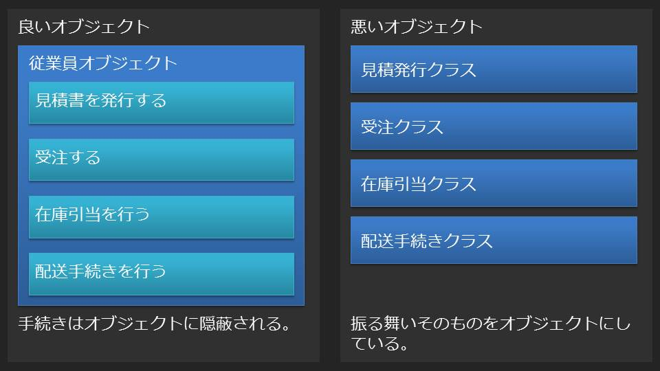

この記事ではオブジェクト指向でもっとも重要な概念であるクラスとオブジェクトについて解説していきますが、それに先立ってオブジェクト指向とは何だったか？という点について改めて振り返ってみたいと思います。
オブジェクト指向とは、システムの振る舞いをオブジェクト同士の相互作用によって実現しようとする考え方のことである。
上記の説明は簡潔でオブジェクト指向の本質を捉えていますが、ではオブジェクトとは？という新たな疑問が生じます。まるで禅問答のようです。結局のところ、オブジェクト指向を正しく理解するためには「オブジェクトとは何か？」という疑問を解決する必要がありそうです。
多くの人はオブジェクト指向をはじめて学んだ時に「犬クラス」や「猫クラス」があり、それらは「動物クラス」を継承するというような説明を目にしたことがあると思います。これらの説明は身近な例を用いてとてもうまくオブジェクト指向の概念について説明していると思いますが、実際にJavaをはじめとしたオブジェクト指向言語でシステム開発を担当するようになると「犬クラス」や「猫クラス」が登場することはまずありません。結局スケジュールに追われたり、フレームワークなどの制約（実はこれは結構大きな問題です。）があったりして、以下のような妥協の産物が生産されます。
最初にオブジェクト指向について学んだ内容とずいぶん違っているようです。試みに、業務システムの開発をオブジェクト指向言語によって行っている人に聞きたいのですが、あなたの開発しているシステムが存在しなければ、そのシステムが対象とする業務を遂行するのは誰でしょうか？業務ロジックですか？DAOですか？どちらも違います。システムが存在しなければ業務を遂行するのは従業員のはずです。にもかかわらず、多くの業務システムでは従業員オブジェクトは業務を行いません。これはどう考えても不自然です。
上記で指摘した不自然さは、入力チェッククラスや業務ロジッククラスが犬クラスや猫クラスと明らかに異質であるという点に起因します。入力チェックや業務ロジックは業務を遂行するうえでの手続きに過ぎず、業務を遂行する主体ではありません。オブジェクト指向では手続き（メソッド）はオブジェクトの中に隠蔽される（カプセル化）ことになっていたはずです。
オブジェクトは生きた有機体です。システムが存在しなければそのシステムで実現する業務を実際に遂行するのがオブジェクトです。ですから、会社、従業員、プリンター、CSVファイル、見積書、総勘定元帳などは正しいオブジェクトです。しかし、バリデーター、シングルトン、ユーティリティ、XMLパーサーは正しいオブジェクトではありません。バリデーターというものをプログラムの外の世界で見たことがありますか？見たことがないのなら、それは正しいオブジェクトではありません。
クラスとオブジェクトの関係性を説明する時、よく「クラスは雛形でオブジェクトが実体だ」という説明を目にします。これは技術論としてはそうなのですが、まるで誰かが雛形を使ってオブジェクトを生産しているかのような印象を与えるので、概念としては正確な説明ではありません。クラスとオブジェクトだけが存在するのであって、雛形を使ってオブジェクトを生産する誰かは存在しません。オブジェクトが欲しければクラスに頼むしかありません。この概念は、多くのオブジェクト指向言語ではコンストラクタという形で表現されています。
File csvFile = new File("some-data.csv");
クラスとはオブジェクトが生まれる場所です。他のオブジェクトからの要求に応じてオブジェクトを構築し、使われなくなったオブジェクトを破壊することがクラスの役割です。クラスは自分自身から生まれたオブジェクトが果たすべき役割を規定しますが、クラスから生み出されたオブジェクトは自身に基づいて行動します。
File existFile = new File("exists.txt");
existFile.exists(); // trueを返す。
File nonExistsFile = new File("not-exist.txt");
nonExistFile.exists(); // falseを返す。
上記の例を見てください。existFileもnonExistsFileも同じFileクラスによって生み出されていますが、そのexistsメソッドは異なる値を返します。Fileクラスの規定により、全てのFileオブジェクトはexistsメソッドを持ちますが、メソッドが返す値はオブジェクトの状態によって変わります。一見当たり前のように思えますが、この事実はオブジェクトはクラスの規定に従うが、その振る舞いはオブジェクト自身の状態に依存するという事実をよく物語っています。
実際にJavaの開発現場を見てみると、オブジェクトをまるでデータホルダーのように使っている例をよく見ます。と言うより、完全にそれがスタンダードになっていると言っても良いくらいです。曰く、フィールド変数はprivateで宣言し、フィールド変数へのアクセスは対応するpublicメソッドによって行うというものです。これをsetter/getterパターンと呼んでさえいますが、内実は以下のようなものです。
private String name;,
・
・
・
public String getName() {return this.name;}
public void setName(String name){this.name = name;}
これは単にprivateフィールドへの直接的な読み書きをpublicメソッドに置き換えているだけで、それなら最初からpublicフィールドを宣言すれば良いのです。しかし、そうしたことよりも深刻なのは、データホルダー化したオブジェクトが本来実装すべきメソッドがオブジェクトの外に（多くは業務ロジッククラスやDAOに）切り出されてしまっているであろうという点です。本来オブジェクトが持つべき振る舞いそのものを業務ロジッククラスなどと称してオブジェクト化してしまうという過ちは本来のオブジェクトがデータホルダー化してしまっていることと無関係ではないでしょう。繰り返しますが、振る舞いはオブジェクトに内包されます。振る舞いを持たずデータだけを持つオブジェクトはオブジェクトとしての要件を満たしません。それは単なるデータホルダーです。ましてや、振る舞いそのものをオブジェクトにしてしまったようなものがオブジェクトに値するかどうか論じるまでもありません。
しかしながら、オブジェクトをデータホルダー化することに全く合理性がないという訳ではありません。業務アプリケーションはほぼ間違いなくRDBMSとの連携が前提となりますが、RBMSのテーブルとデータホルダーオブジェクトは相性が良いのです。いつでも好きなタイミングでデータを取得したり更新したりできるデータの入れ物が必要とされる背景は理解できないこともありません。ただ、データホルダーオブジェクトがオブジェクトとして論理破綻を起こしているのは先に指摘したとおりです。そもそも、DAOパターンと呼ばれるデータホルダーとデータアクセスオブジェクトの組み合わせもRDBMSとオブジェクト指向の間に普遍的に存在する不整合（インピーダンスミスマッチ）を解決している訳ではなく、オブジェクトとRDBMSにおけるテーブルをいかにして相互変換するかという課題はRDBMSとオブジェクト指向言語を組み合わせてシステムを構築しようとする限り常に存在し続けます。
答えはやはり誰が主体なのかというところに落ち着きます。例えば顧客テーブルに顧客オブジェクトの情報を保存する時のことを現実に置き換えると、顧客情報を顧客管理台帳のような帳簿に記録する行為が該当します。この行為の主体は恐らく顧客係の従業員ということになるでしょう。現実世界における顧客係は顧客管理台帳がどこに保管されていてどのように読んだら良いのか知っているのと同様に、顧客係オブジェクトはRDBMSとの接続方法を知っており、顧客テーブルのどの項目にどんな意味があるのか知っているということになります。